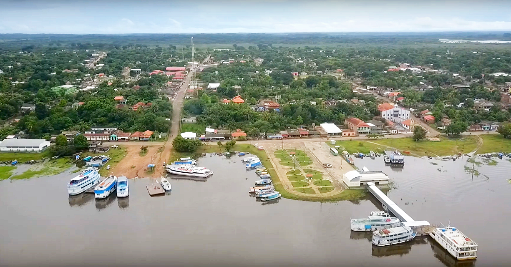

O município de Curuá, localizado no oeste do estado do Pará, consolidou-se como uma comunidade marcada pela forte identidade cultural, pela tradição familiar e pela relação direta com a natureza.
Com aproximadamente 14.834 habitantes, segundo dados do IBGE, o município mantém características típicas do Baixo Amazonas, onde o rio continua sendo elemento fundamental para transporte, economia e integração social.
A economia local baseia-se principalmente na agricultura familiar, pesca, pequeno comércio e atividades extrativistas. A vida comunitária ainda preserva costumes tradicionais, celebrações religiosas e festividades populares que reforçam o sentimento de pertencimento.
A educação e os serviços públicos vêm se expandindo ao longo dos anos, acompanhando o crescimento populacional e as demandas sociais. A juventude curuaense representa a continuidade da história iniciada séculos atrás, agora com novos desafios e oportunidades.
Apesar das transformações do tempo, Curuá mantém sua essência: uma terra de famílias enraizadas, de memória viva e de esperança constante no futuro.
